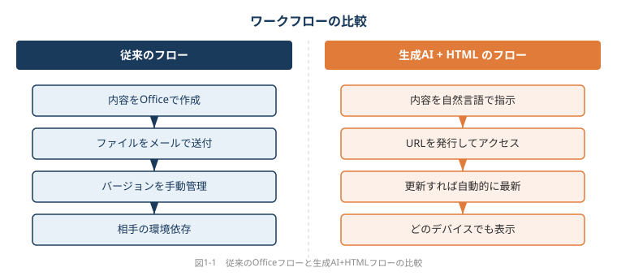
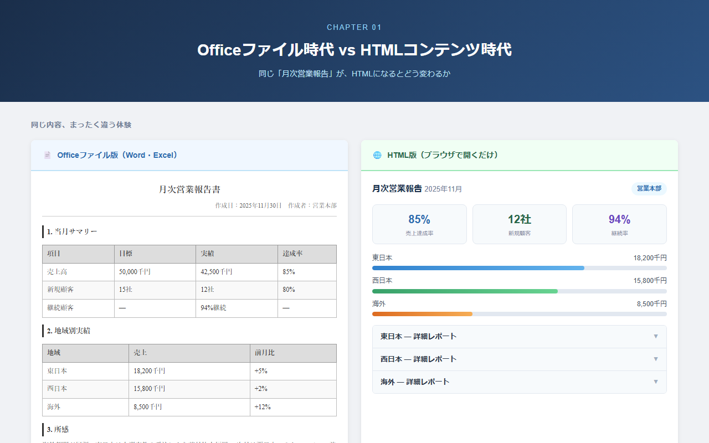

第1章 なぜ今OfficeではなくHTMLなのか
📂 本章のサンプルファイル:ch01_before_after.html
ブラウザで開くと、本章で解説するHTMLコンテンツを実際に操作できます。
本書サポートサイトからダウンロードしてください。
1-1 静的文書の時代が終わりを告げている
あなたが先週送ったファイルを、相手はどんな環境で開いたか知っていますか？
メールの「送信済み」フォルダを思い浮かべてみてください。そこには、あなたが過去に送ったWordファイル、Excelの集計表、PowerPointのスライドが並んでいるはずです。でも、受け取った相手がそのファイルをどこで、どんな端末で、どのように開いたか——あなたはどれだけ把握しているでしょうか。
ほとんどの場合、わからないはずです。相手がWindowsパソコンで開いたのか、iPhoneで開こうとして途中で諦めたのか、はたまた全く開かずにいるのか。ファイルを「送る」という行為は、情報を届けたという安心感を与えてくれますが、実際に届いたかどうかとは別の問題です。
1-1-1 ファイルを「送る」時代の限界
「最新版_修正3_final_v2.pptx」
こんなファイル名を見たことがある方は多いのではないでしょうか。プロジェクト報告書、営業提案書、月次振り返り資料——ビジネスの現場では毎日無数のOfficeファイルが生まれ、メールやチャットで飛び交い、気づけばバージョン管理の混乱が生まれています。
あるコンサルティングチームでは、月次報告書の最終版を確定させるまでに、平均で「final」のついたファイルが4つ生まれると言います。「final」の後に「final2」が生まれ、「final2_修正」が生まれ、最終的に誰も「どれが本当の最新版か」を即答できない状態になる。これはそのチームだけの問題ではなく、ファイル共有という文化そのものが抱える構造的な欠陥です。
問題はバージョン管理だけではありません。ファイルは「送ったとき」の情報を封じ込めた静止画です。翌日に内容を修正しても、すでに相手の手元に届いたファイルは変わりません。更新情報をまた送らなければならず、相手は「どちらが最新か」を確認する手間が生じます。情報の鮮度が勝負のビジネスにおいて、これは無視できないコストです。
ファイル共有の不便さをリストにすると、こうなります。
- バージョン混乱：誰が何版を持っているか把握できない
- 更新の届かなさ：修正しても相手の手元のファイルは古いまま
- 開封の不確実性：相手が開いたかどうか確認できない
- 環境依存の崩れ：送った側と受け取った側で表示が異なることがある
- 容量の肥大化：添付ファイルがメールボックスやストレージを圧迫する
これらは一つひとつは小さな問題に見えますが、毎日積み重なれば膨大な非効率になります。
💡 AIへの依頼例
【目的】ファイル送付をやめて、URLで共有できるプロジェクト週次報告ページを作りたい
【含める要素】報告週、プロジェクト名、進捗ステータス（赤・黄・緑）、今週の実績、来週の予定、課題・リスク
【スタイル】ビジネス向け、シンプル、ステータスは色付きバッジで視覚的に表示
【出力形式】完全なHTMLファイルとして出力してください（CSS込み、ファイル1つで動作）
このプロンプトをそのままClaude/ChatGPT/Geminiに貼り付けて使えます。
1-1-2 スクリーンで読む文書への移行
もうひとつ、見落とされがちな問題があります。それは「印刷前提」の設計思想です。
Wordで文書を作るとき、多くの人はA4用紙に印刷したときの見た目を頭に浮かべながら作業します。PowerPointのスライドも、プロジェクターや印刷資料に映えるように設計します。Excelの集計表も、印刷すると右端が切れないように余白を調整します。
しかし、現実を見てみましょう。今日の職場で、実際に資料を印刷して読む機会はどれだけ残っているでしょうか。会議でスクリーンに映す、メールで送ってパソコンの画面で確認する、スマートフォンでざっと目を通す——そういった場面がほとんどではないでしょうか。
印刷前提で設計された文書には、画面で読むときに不便な特性があります。A4縦の比率は画面の横長な比率と根本的に相性が悪く、余白も多く取るため情報密度が低くなりがちです。スマートフォンでは特に顕著で、PowerPointファイルをiPhoneで開こうとした経験のある方なら、文字が小さすぎて読めなかった、レイアウトが崩れた、そもそもアプリが入っていなかったといった経験をお持ちかもしれません。
ある営業担当者が、取引先との商談前にiPhoneで提案書を確認しようとして文字化けが起き、結局プレゼンの直前まで内容を把握できなかったという話は、決して珍しくありません。送る側はPCで完璧に整えた資料でも、受け取る側の環境によってはまったく別の姿で表示されるのです。
時代は変わりました。文書は「印刷されるもの」から「画面で読まれるもの」へと、その前提が静かに、しかし確実に転換しています。
1-1-3 「配布」から「アクセス」へのパラダイムシフト
ここで、まったく別の考え方を提案したいと思います。
情報を「ファイルに入れて届ける」のではなく、「URLという場所に置いてアクセスしてもらう」という考え方です。
あなたが毎日使っているWebサイト——ニュースサイト、社内のポータル、Googleのドキュメント——はすべてこの方式で動いています。URLさえあれば、PCでもスマートフォンでもタブレットでも、誰でも同じ情報にアクセスできます。ファイルのバージョンを管理する必要はなく、更新すれば次にアクセスした人は自動的に最新情報を見ます。
この「アクセス型」の情報共有に必要な技術こそ、HTMLです。
HTML（HyperText Markup Language：ハイパーテキスト・マークアップ・ランゲージ）とは、Webページを作るための言語です。難しそうに聞こえますが、本質は「情報を構造化してブラウザに渡す」ためのテキスト形式のファイルにすぎません。ブラウザ（ChromeやSafari、Edgeなど）がそのファイルを読んで、きれいに表示してくれます。
もし月次報告書をHTMLとして公開すれば、更新するたびに全員に再送する必要はありません。URLを知っている全員が、常に最新版を見られます。プロジェクト状況ページをHTMLにすれば、「今どうなっているの？」という問い合わせに逐一答える代わりに、「このURLを見てください」と答えるだけで済みます。
これは単なる技術の話ではなく、仕事の仕方そのものの変革です。
💡 AIへの依頼例
【目的】社内の月次売上報告書をHTMLページにして、URLで関係者全員が常に最新版を見られるようにしたい
【含める要素】報告月、部門別売上（表形式）、前月比（増減をパーセントで表示）、所感・コメント欄、作成者と更新日
【スタイル】ビジネス向け、清潔感のある白基調、前月比プラスは青・マイナスは赤で色分け
【出力形式】完全なHTMLファイルとして出力してください。データ部分はHTMLの中に直接書き込む形にしてください
このプロンプトをそのままClaude/ChatGPT/Geminiに貼り付けて使えます。
1-2 HTMLが「ビジネスの共通言語」になりつつある理由
もし今日から成果物をURLで渡せるとしたら、あなたの仕事の何が変わりますか？
ファイルを渡す代わりにURLを渡す——この発想の転換は、最初は小さな変化に見えます。しかし、それが積み重なるとビジネスの作り方そのものが変わります。この節では、HTMLという形式がなぜビジネスの「共通言語」になれるのかを、具体的な側面から考えてみましょう。
1-2-1 あらゆるデバイスで動く唯一のフォーマット
会議室でプロジェクターに映す。社員がデスクのPCで確認する。外出先でiPhoneからざっと見る。受付の大型ディスプレイに表示する。取引先がAndroidタブレットで開く。
これら5つのシナリオで、同じOfficeファイルを使って問題なく表示できるでしょうか。
現実には難しいはずです。プロジェクターでは文字が小さすぎる、スマートフォンでレイアウトが崩れる、取引先のパソコンにOfficeが入っていなくて開けない——こういった問題が発生します。
一方、HTMLはどうでしょうか。ブラウザがインストールされていれば、どのデバイスでも表示できます。そして世界中のあらゆるスマートフォン、タブレット、パソコンには、標準でブラウザが搭載されています。
さらに、HTMLにはレスポンシブデザイン（responsive design：画面の大きさに応じて表示を自動的に調整する仕組み）という考え方があります。同じHTMLファイルが、パソコンの大きな画面では3カラムの豊かなレイアウトで表示され、スマートフォンの小さな画面では読みやすい1カラムのシンプルなレイアウトに自動変換される——そういった体験を実現します。
Officeファイルにはこのような「環境適応」の仕組みがありません。A4横を想定して作ったスライドは、スマートフォンでは常に横向きの小さな文字として表示されます。
HTMLは、多様な受け取り手の環境に対応できる、事実上唯一の汎用フォーマットです。
1-2-2 Webブラウザという「無料で最強の閲覧環境」
もうひとつ、見逃せない事実があります。ブラウザは無料で、インストール不要で、ライセンス費用もかかりません。
考えてみてください。Word文書を正しく表示するには、Microsoft Officeが必要です。これは有料ソフトウェアです（Microsoft 365のサブスクリプション契約）。会社支給のPCには入っているかもしれませんが、個人のスマートフォンには入っていない場合がほとんどです。Excelのマクロ入りファイルを開くには特定のバージョンが必要だったり、PowerPointのアニメーションが再生されないケースもあります。
一方、HTMLを表示するのに必要なブラウザは、どのデバイスにも標準で搭載されており、追加コストは一切かかりません。Chrome、Safari、Firefox、Edge——どれを使っても、同じHTMLが同じように表示されます（細かい差異はありますが、実用上の問題はほとんどありません）。
「ファイルを送れば相手が開けるはず」というのは、実は「相手がOfficeを持っているはず」という前提に立っています。その前提が崩れる場面は、ビジネスの拡大とともに増えていきます。取引先が異なるオフィスソフトを使っている、社外の関係者はWindowsではなくMacを使っている、スマートフォンからのアクセスが増えている——そういった現実の中で、「ブラウザさえあれば見られる」HTMLの普遍性は大きな強みです。
1-2-3 検索・リンク・埋め込みができる文書の強さ
HTMLには、Officeファイルにはない本質的な特性があります。それは「Webの文脈に溶け込める」という点です。
Officeファイルは、ファイルシステムの中に孤立して存在します。フォルダを掘り進まないとたどり着けませんし、検索エンジンで内容を探すこともできません。一方、HTMLは他のページとリンクでつながり、特定の見出しに直接ジャンプするURLを作れ、検索エンジンにインデックスされ、他のページに埋め込むこともできます。
具体的に考えてみましょう。社内ナレッジのHTMLページを作ったとします。そのページには社内検索から直接たどり着けますし、別のページから「詳しくはこちら」とリンクを張れます。特定の手順のセクションに直接ジャンプするURLを同僚に伝えられます（例えば「このURLの『承認手順』という部分を見てください」という形です）。
これはWordやExcelにはできないことです。ファイルを開いて、手動でスクロールして、目的の箇所を探す——その一連の手間が、HTMLでは「URLをクリックする」だけに省略されます。
情報が孤立したファイルの中に閉じ込められているのか、Webの文脈に開かれた状態で存在しているのか。この違いは、情報の活用可能性に大きな差を生みます。
1-3 生成AIが変えた「HTMLの入り口」
「コードが書けないからHTMLは無理」と思っていませんか？
ここまで読んで、「HTMLの便利さはわかった。でも、自分にはHTMLを作れない」と感じた方もいるかもしれません。その感覚は、つい数年前まではまったく正当な認識でした。HTMLを書くには、専用の知識と経験が必要で、非エンジニアには縁遠い技術でした。
しかし今、その前提は崩れています。生成AIの登場が、HTMLの入り口を根本的に変えたのです。
1-3-1 コードを書かなくてもHTMLが作れる時代
ChatGPTやClaude（クロード）などの生成AI（人工知能が文章や画像などのコンテンツを自動生成する技術）は、自然な日本語で指示するだけでHTMLを生成してくれます。
例えば、会議の議事録があったとします。その文章をそのまま生成AIに渡して、「これを見やすいHTMLページにしてください。見出しと箇条書きを使って整理してください」と伝えるだけで、数秒後にはきれいに構造化されたHTMLが生成されます。
プロンプト（prompt：生成AIへの指示文）の例を見てみましょう。
プロンプト例：
以下の議事録をHTML形式で整理してください。日付・参加者・議題・決定事項・次回アクションの構造にまとめ、読みやすいスタイルをつけてください。
（議事録の内容をここに貼り付ける）
このような指示を送ると、生成AIは完全なHTMLファイルを出力します。そのHTMLをコピーしてテキストファイルに保存し（拡張子を「.html」にする）、ブラウザで開くと、整然としたページが表示されます。コードを一行も書かずに、プロの作業者が作ったようなHTMLページが30秒で完成するのです。
この体験は、一度やってみると衝撃的です。「HTMLは難しい技術」という先入観が、一瞬で覆されます。
1-3-2 生成AIはOfficeをどこまで代替できるか
「じゃあ生成AIでWord文書やPowerPointも作れるんじゃないか？」という疑問は自然です。確かに生成AIはWordの文章もPowerPointのスライド構成も提案できます。しかし、出力されたOfficeファイルをそのまま使える場面は限定的です。
理由は先ほど述べた通りです。Officeファイルはバージョン違い、環境差異、共有の煩雑さという問題を抱えたままです。生成AIで作っても、ファイルである以上、その制約からは逃れられません。
一方、生成AIがHTMLを出力した場合は話が違います。ブラウザさえあればすぐに開けて、URLで共有でき、更新も反映されます。生成AIとHTMLの組み合わせは、Officeの制約を根本的に回避する方法を提供してくれるのです。
生成AIとHTMLを組み合わせることで生まれる価値を整理すると、このようになります。
| 従来のフロー | 生成AI + HTMLのフロー |
|---|---|
| 内容をOfficeで作成 | 内容を自然言語で指示 |
| ファイルをメールで送付 | URLを発行してアクセス |
| バージョンを手動管理 | 更新すれば自動的に最新 |
| 相手の環境依存 | どのデバイスでも表示 |
| 印刷・配布の手間 | ブラウザで即時確認 |

💡 AIへの依頼例
【目的】毎週メールで添付送付していた営業提案書を、URLで共有できるHTMLページに切り替えたい
【含める要素】会社名・担当者名、提案の概要（3つの強み）、料金プラン比較表、導入事例の概要（2〜3件）、問い合わせ先
【スタイル】プロフェッショナルな印象、配色は紺と白を基調、スマートフォンでも読みやすいレイアウト
【出力形式】完全なHTMLファイルとして出力してください。CSSはHTMLファイル内に含めてください
このプロンプトをそのままClaude/ChatGPT/Geminiに貼り付けて使えます。
1-3-3 「使える技術」のハードルが下がった意味
技術のハードルが下がるということは、単に「便利になった」というだけではありません。それは「誰が価値を生み出せるか」が変わるということです。
かつてHTMLを作るには、コーディングスキルが必要でした。そのため、情報発信やページ作成はエンジニアやデザイナーの仕事でした。しかし今、プロンプトを書く能力——つまり「何を作りたいかを言語化する能力」があれば、誰でもHTMLを生み出せます。
これは、営業担当者が自分の提案書をHTMLで作れるということです。人事担当者が社内研修の案内ページをHTMLで作れるということです。管理職が自分のチームのダッシュボードをHTMLで作れるということです。
仕事の成果物を「自分で設計して自分で作り切る」という力が、エンジニア以外のビジネスパーソンにも備わりつつあります。
生成AIの登場は、HTMLを「エンジニアの道具」から「ビジネスパーソンの道具」に転換する歴史的な出来事だったと、後世の人々は振り返るかもしれません。
コラム：ファイルの旅——あなたが送ったWordは、どこへ行くのか
あなたが月曜日の朝に送った提案書を、相手の立場から追ってみましょう。
メールを受け取った取引先の担当者は、iPhoneでメール通知を確認します。添付のWordファイルをタップすると、「このファイルを開くにはMicrosoft Wordが必要です」というメッセージが表示されます。担当者はWordのアプリを持っていませんでした。とりあえず保留にして、パソコンに戻ったら確認しようと思います。
昼に会議が長引き、結局パソコンを開けたのは夕方です。Wordで開くと、フォントが一部崩れています（使ったフォントが相手のPCに入っていなかったためです）。なんとか読み進めますが、3ページにあるグラフがうまく表示されません。内容は把握できたものの、「細かい部分を見直したい」と思いながら、その場でもう一度開く気にはなれませんでした。
翌週の打ち合わせで担当者は「先日の資料を拝見しました」と言います。しかし実際には、部分的にしか確認できていません。あなたの丁寧な作りこみは、届く前に大部分が失われていたのです。
このような「ファイルの旅」は、毎日無数のオフィスで繰り返されています。URLを渡すだけで相手のブラウザに完全に表示されるHTMLが、この問題をどれだけ改善できるか——想像してみてください。

ch01_before_after.html
本書サポートサイトよりダウンロードし、ブラウザで開いてご確認ください。
1-4 本章のまとめ：認識を変えることから始まる
1-4-1 「HTMLは難しい」という先入観を手放す
本章の最後に、少し立ち止まって考えてほしいことがあります。
「HTMLは難しい」という感覚は、どこから来たのでしょうか。多くの方にとって、それは2000年代のホームページ作成ブームの記憶からきているのではないでしょうか。当時、HTMLを学ぶにはタグの意味を一つひとつ覚え、ブラウザごとの差異に悩み、デザインの知識も必要でした。個人がホームページを作るのは相当な根気のいる作業でした。
しかし今日のHTMLはまったく別の文脈にあります。生成AIが代わりにコードを書き、あなたはその結果を確認し、修正の指示を出すだけです。難易度の中心は「コードを書けるか」から「何を作りたいかを言葉にできるか」に移っています。
この認識の転換が、本書全体の出発点です。
1-4-2 仕事の成果物を問い直す視点
では、具体的に何を変えればよいのでしょうか。
最初のステップは、仕事の成果物を一度ゼロベースで見直すことです。「この報告書、本当にWordで作る必要があるか？」「この提案資料、PowerPointである必然性はあるか？」「この集計表、Excelのまま配る必要はあるか？」——そう問い直してみてください。
もちろん、すべてをHTMLに変える必要はありません。Officeにはオフィスの強さがあります。詳細な数値計算はExcelが得意ですし、既存のテンプレートを使わなければならない社内規定があることもあります。
大切なのは、「Officeしか選択肢がない」という思い込みから自由になることです。HTMLという選択肢が存在することを知り、それを使える場面で積極的に使う——その柔軟な判断力が、これからのビジネスパーソンには求められています。
第1章 まとめ
この章で学んだことを整理します。
静的文書の限界：Officeファイルはバージョン管理の煩雑さ、環境依存の崩れ、印刷前提の設計という構造的な制約を持っています。「ファイルを送る」文化は、情報が確実に届いたという保証を持てません。
HTMLの普遍性：HTMLはすべてのデバイスで動き、ブラウザという無料インフラで表示され、URLで共有できます。「ファイルを届ける」から「URLでアクセスしてもらう」へのパラダイムシフトは、情報共有の根本的な改善をもたらします。
生成AIという転換点：ChatGPTやClaudeなどの生成AIを使えば、コードを一行も書かずにHTMLを作れます。技術のハードルが下がったことで、HTMLは非エンジニアにとっても使えるツールになりました。
認識の転換：「HTMLは難しい」という先入観を手放し、仕事の成果物の形式をゼロベースで問い直す視点を持つことが、変化の第一歩です。
次章への橋渡し
「でも、HTMLってそもそも何ですか？ホームページを作る技術じゃないんですか？」
こう思われた方は、次章が答えを用意しています。第2章では、HTMLとは何かを非技術者向けに丁寧に解説します。HTMLとOffice各ツールを設計思想の面から比較し、HTMLがビジネスシーンでどのように活用できるかを具体的に見ていきます。「難しそう」が「意外と自分に関係がある」に変わる章です。